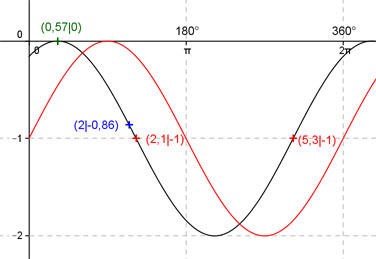

Aufgabe 206 Ergänzen Sie die Wertetabelle für x zwischen 0 und 2π: y = sin (x + 1) - 1 x 2 2,1 oder 5,3 y -0,86 -1 Amplitude = 1 ; Periode = 2π ; sin (x + 1) - 1 bedeutet: sin (x) - 1 ist um 1 Einheit nach unten verschoben und hat eine Phasenverschiebung (siehe unten) von 1 oder 57,3° nach links. Berechnung der Nullstellen: sin (x - 1) - 1 = 0 --> Substitution (x - 1) = u --> sin u - 1 = 0 |+1 --> sin u = 1 --> u = arc sin 1 --> u = π/2 + k * 2π mit k = 0, 1, 2, ... --> Rücksubstitution liefert x + 1 = π/2 + k * 2π |-1 --> x = π/2 + k * 2π - 1 x1 = π/2 - 1 = 0,57 oder 32,7°  Funktionswert an einer Stelle x ermitteln: 2 * 180° x = 2 oder ---------- = 114,6° π f(2) = sin (2 + 1) - 1 = sin (114,6° + 57,3°) - 1 = -0,86 gerundet. Berechnung der x-Werte für y = f(x) = -1: f((x)) = -1 eingesetzt,existiert für sin (x) - 1 zwischen 0 und π bzw. 0° und 180° und zwischen π und 2π bzw. zwischen 180° und 360°. sin (x) - 1 = -1 |+1 --> sin x = 0 --> x = arc sin 0 = 0 + k * π --> x1 = π x2 = 2π. Unter Berücksichtigung der Phasenverschiebung: 2,1 * 180° x1 = (π - 1) = 2,14 (2,1 gerundet) oder ------------ = 120,3° π x2 = (2π - 1) = 5,28 (5,3 gerundet) oder 303,7°.